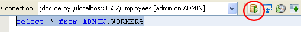
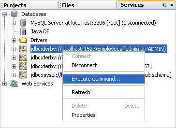
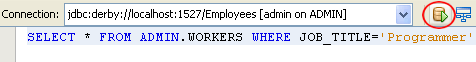
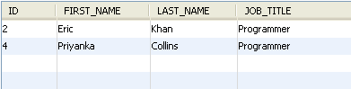
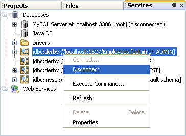

SQL Commands
In the previous lesson, you created records in your Java DB database table. In this lesson, you'll learn a few SQL commands so that you can manipulate records in a table.
SQL stands for Structured Query Language, and is a way to query databases. You can select records, insert, delete, and update records, create tables, drop tables, and more besides. It's quite a powerful tool.
SQL uses simple keywords to do the work. If you want to select all the records from a table, the words SELECT and FROM are used, along with the "all records" symbol, which is *:
SELECT * FROM table_name
If you look at the top half of the NetBeans window, you'll see that a SELECT statement has already been set up: (NOTE: SQL is not case sensitive)
select * from ADMIN.WORKERS
This says "Select all the records from the table called Workers". (The ADMIN part, before the dot of Workers, is something called a Schema. This describes the structure of the database, but also identifies things like users and the privileges they have. Don't worry about schemas, as we won't be going into them.)
In NetBeans, you run a SQL statement by clicking the Run button on the toolbar:

The results from the SQL statements are then displayed in the bottom half of the window:

The WHERE Clause
To narrow down your search results, you can use a WHERE clause with the SELECT statement:
SELECT * FROM table_name WHERE column_name=value
After the keyword WHERE you need the name of a column from your table. You then type an equals sign, followed by a value. As an example, here's a SQL statement that returns all the programmers in our table:
SELECT * FROM ADMIN.WORKERS WHERE JOB_TITLE='Programmer'
To try this SQL Statement out, right-click your table name in the Services area. From the menu that appears, select Execute Command:

When you click on Execute Command, a new window appears. Type the above SQL Statement, and then click the Run icon:

The results will be displayed in the bottom half of the window:

As you can see, two rows are returned from the query.
You can also use the keyword LIKE with the WHERE clause. This then replaces the equals sign. LIKE is usually used with a wildcard character. The wildcard character % means "any characters", for example, while an underscore is used for just a single character.
Instead of the equals sign or the keyword LIKE, you can also use the conditional operators (Greater Than, Less Than, etc.). If we had a salary column, we could search for all workers who are getting paid more than 1000 a week:
SELECT * FROM ADMIN.WORKERS WHERE SALARY > 1000
Exercise
Try running the following SQL Statement:
SELECT * FROM ADMIN.WORKERS WHERE JOB_TITLE LIKE '%er'
How many results are displayed?
We'll leave SQL Statements there, as we now have enough to start programming. Before doing so, however, close down the connection to your table by right clicking it in the Services are. From the menu, select Disconnect:

We'll connect to this database and table again, using Java code this time
<-- Adding New Records | Connect to a Database Using Java Code -->